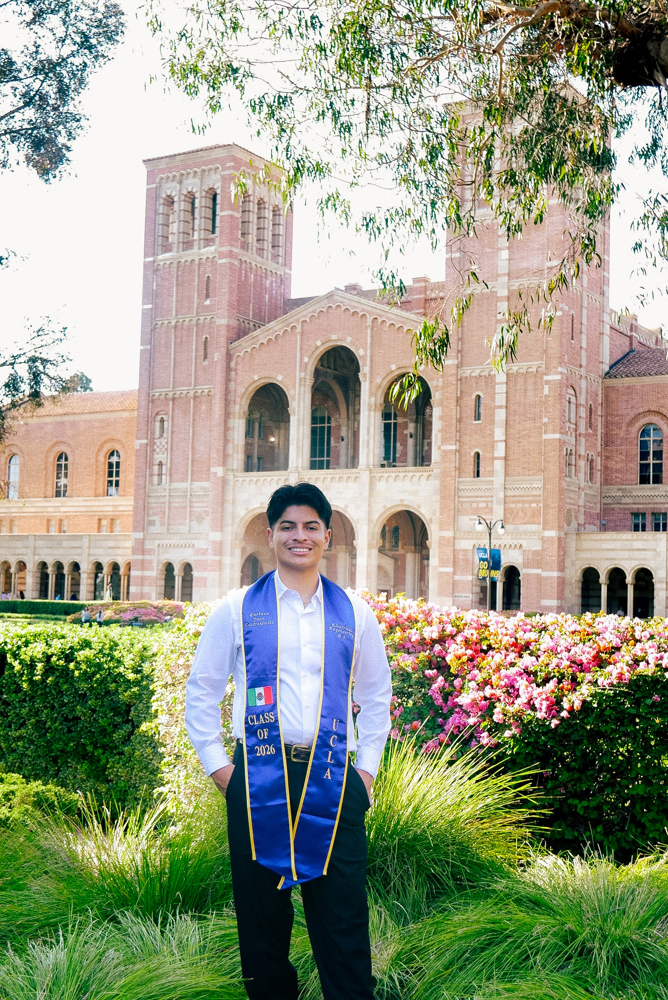

About Me
Hola, I'm Gustavo Castrejon, a first-generation Mexican-American engineering student at UCLA graduating in 2026, with hands-on experience across both hardware and software. My interest in engineering started young, taking things apart and fixing electronics with my abuelo, and it's grown into something I don't want to stop chasing: I want to be technically challenged, and I want to keep learning for as long as I possibly can.
That's part of why I'm planning to pursue a Master's degree after graduation, and why I keep picking projects that force me to learn something new rather than repeat what I already know. My work spans circuit design, embedded systems, and full-stack software, built through research at UCLA's California NanoSystems Institute, an internship at Bank of America, and personal projects I take on just to understand how something works.
I'm looking for a team that will challenge me technically and give me real ownership early. If that sounds like your team, I'd love to connect.